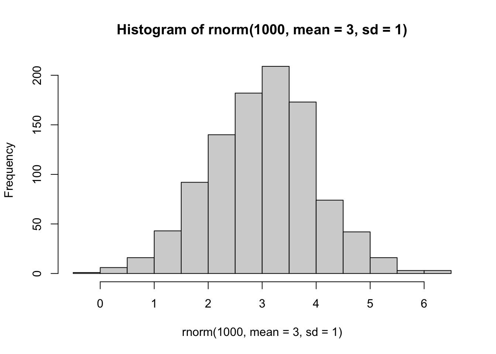
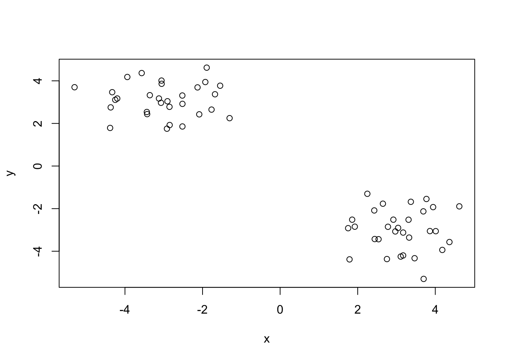
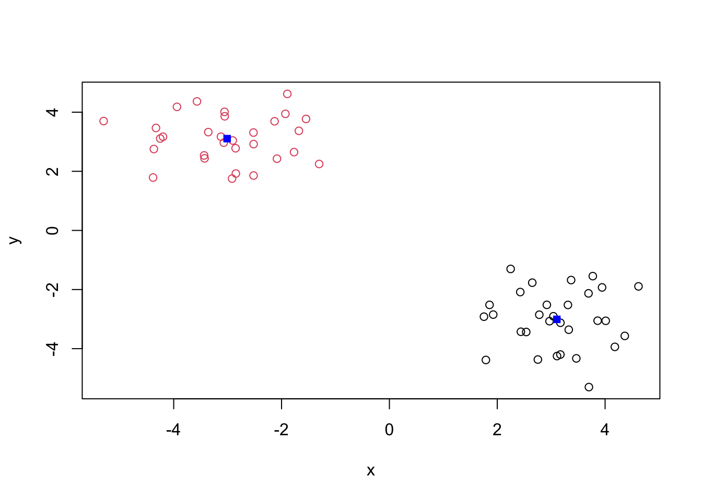
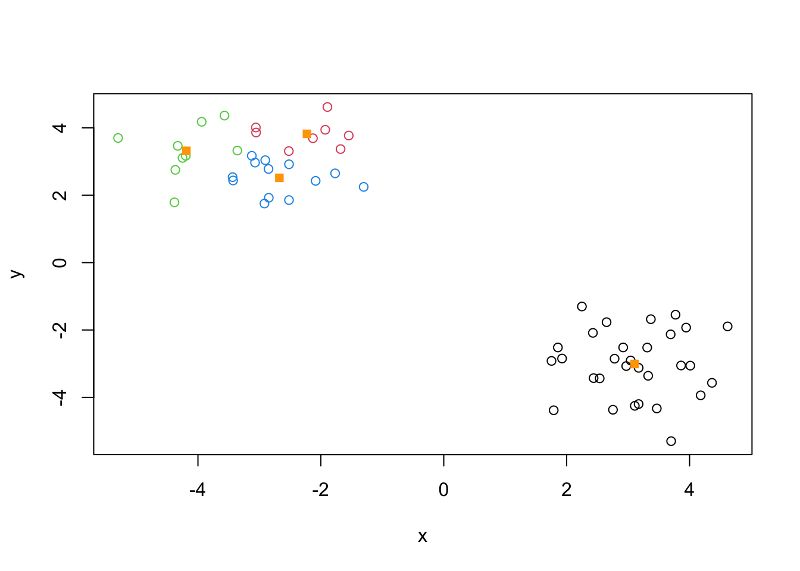
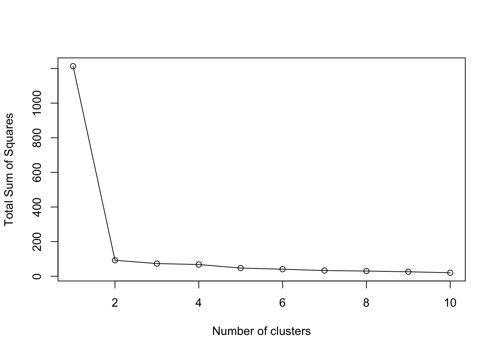
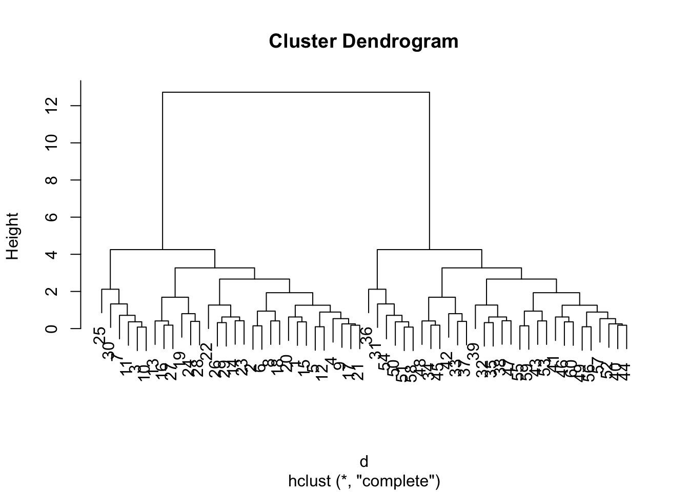
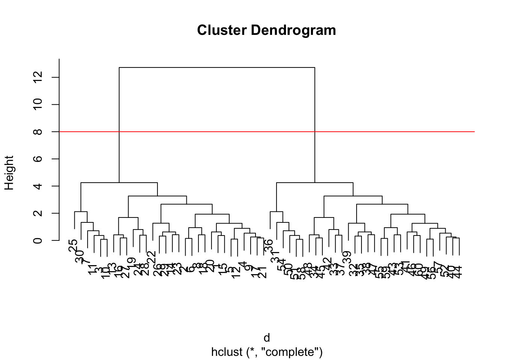
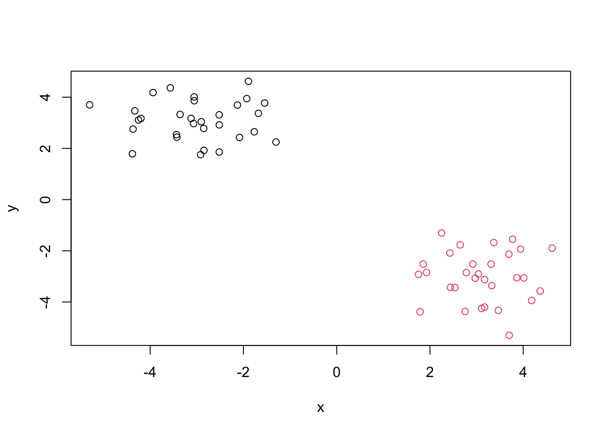

hist( rnorm(1000, mean = 3, sd = 1) )
Today we will explore some core machine learning methods that are very popular in bioinformatics. These include clustering and dimensionality reduction. The goal of clustering is to find groups within the data.
The meain function in “base” R for K-means clustering is called kmeans().
Before we dive too deeply, let’s make up some “simple” data that we can cluster and know if we are getting a good answer. To assist with this process we can use rnorm() function:
hist( rnorm(1000, mean = 3, sd = 1) )
x <- c( rnorm(30, -3), rnorm(30, 3) )
x [1] -2.518144 -3.057823 -4.250432 -3.358907 -3.436019 -3.054065 -4.367884
[8] -3.568618 -3.123565 -4.198724 -4.328835 -3.427953 -2.518729 -1.546265
[15] -2.852125 -2.847342 -2.904414 -3.939281 -1.302926 -2.520872 -3.070856
[22] -1.893041 -1.679165 -2.084969 -4.382499 -2.129258 -2.917807 -1.768123
[29] -1.928619 -5.299508 3.699770 3.943767 2.649382 1.753254 3.692092
[36] 1.788997 2.426915 3.369744 4.619004 2.969046 3.310596 2.248034
[43] 4.180677 3.041069 1.925081 2.779539 3.771529 1.857073 2.438169
[50] 3.466229 3.170841 3.171294 4.364671 2.753148 3.861544 2.537173
[57] 3.325897 3.108450 4.011547 2.919235The reverse function reverses the order of the vector, positives are now first and negatives are second.
z <- cbind(x = x, y = rev(x))
z x y
[1,] -2.518144 2.919235
[2,] -3.057823 4.011547
[3,] -4.250432 3.108450
[4,] -3.358907 3.325897
[5,] -3.436019 2.537173
[6,] -3.054065 3.861544
[7,] -4.367884 2.753148
[8,] -3.568618 4.364671
[9,] -3.123565 3.171294
[10,] -4.198724 3.170841
[11,] -4.328835 3.466229
[12,] -3.427953 2.438169
[13,] -2.518729 1.857073
[14,] -1.546265 3.771529
[15,] -2.852125 2.779539
[16,] -2.847342 1.925081
[17,] -2.904414 3.041069
[18,] -3.939281 4.180677
[19,] -1.302926 2.248034
[20,] -2.520872 3.310596
[21,] -3.070856 2.969046
[22,] -1.893041 4.619004
[23,] -1.679165 3.369744
[24,] -2.084969 2.426915
[25,] -4.382499 1.788997
[26,] -2.129258 3.692092
[27,] -2.917807 1.753254
[28,] -1.768123 2.649382
[29,] -1.928619 3.943767
[30,] -5.299508 3.699770
[31,] 3.699770 -5.299508
[32,] 3.943767 -1.928619
[33,] 2.649382 -1.768123
[34,] 1.753254 -2.917807
[35,] 3.692092 -2.129258
[36,] 1.788997 -4.382499
[37,] 2.426915 -2.084969
[38,] 3.369744 -1.679165
[39,] 4.619004 -1.893041
[40,] 2.969046 -3.070856
[41,] 3.310596 -2.520872
[42,] 2.248034 -1.302926
[43,] 4.180677 -3.939281
[44,] 3.041069 -2.904414
[45,] 1.925081 -2.847342
[46,] 2.779539 -2.852125
[47,] 3.771529 -1.546265
[48,] 1.857073 -2.518729
[49,] 2.438169 -3.427953
[50,] 3.466229 -4.328835
[51,] 3.170841 -4.198724
[52,] 3.171294 -3.123565
[53,] 4.364671 -3.568618
[54,] 2.753148 -4.367884
[55,] 3.861544 -3.054065
[56,] 2.537173 -3.436019
[57,] 3.325897 -3.358907
[58,] 3.108450 -4.250432
[59,] 4.011547 -3.057823
[60,] 2.919235 -2.518144plot(z)
Now we can run kmeans() on this input z and see what the results look like!
km <- kmeans(x = z, centers = 2)
kmK-means clustering with 2 clusters of sizes 30, 30
Cluster means:
x y
1 3.105126 -3.009226
2 -3.009226 3.105126
Clustering vector:
[1] 2 2 2 2 2 2 2 2 2 2 2 2 2 2 2 2 2 2 2 2 2 2 2 2 2 2 2 2 2 2 1 1 1 1 1 1 1 1
[39] 1 1 1 1 1 1 1 1 1 1 1 1 1 1 1 1 1 1 1 1 1 1
Within cluster sum of squares by cluster:
[1] 46.0879 46.0879
(between_SS / total_SS = 92.4 %)
Available components:
[1] "cluster" "centers" "totss" "withinss" "tot.withinss"
[6] "betweenss" "size" "iter" "ifault" attributes(km)$names
[1] "cluster" "centers" "totss" "withinss" "tot.withinss"
[6] "betweenss" "size" "iter" "ifault"
$class
[1] "kmeans"Q. How many points are in each cluster?
km$size[1] 30 30Q. What component of your result object details cluster assignment/membership?
km$cluster [1] 2 2 2 2 2 2 2 2 2 2 2 2 2 2 2 2 2 2 2 2 2 2 2 2 2 2 2 2 2 2 1 1 1 1 1 1 1 1
[39] 1 1 1 1 1 1 1 1 1 1 1 1 1 1 1 1 1 1 1 1 1 1Q. What component of your result obbject details cluster center?
km$centers x y
1 3.105126 -3.009226
2 -3.009226 3.105126Q. Plot
zcolored by the kmeans cluster assignmnet and add cluster centers as blue points:
plot(z, col = km$cluster)
points(km$centers, co = "blue", pch=15)
Q. Run a K-means clustering and plot the results asking for 4 clusters (K=4):
km4 <- kmeans(x = z, centers = 4)
km4$cluster [1] 4 2 3 3 4 2 3 3 4 3 3 4 4 2 4 4 4 3 4 2 4 2 2 4 3 2 4 4 2 3 1 1 1 1 1 1 1 1
[39] 1 1 1 1 1 1 1 1 1 1 1 1 1 1 1 1 1 1 1 1 1 1plot(z, col = km4$cluster)
points(km4$centers, col = "orange", pch=15)
N.B. You need to tell K-means the number of clusters (i.e. set of
centers = 2)!!
One approach is to try different values for centers and pick the best…
ans <- NULL
for(i in 1:10) {
km <- kmeans(z, centers = i)
ans <- c(ans, km$tot.withinss)
}
plot(ans, typ="o",
xlab = "Number of clusters",
ylab = "Total Sum of Squares")
The main function in “base” R for Hierarchical Clustering is called hclust(). This will work in bottom up fashion. Starts with each data point being in its own cluster, grouping some of them together until everything is in one cluster at the end.
This function does not take your “raw” data for clustering. You must first build a “distance matrix” from your data and pass this as input to hclust()
d <- dist(z)
hc <- hclust(d)This is a bespoke plot() method for hclust() result objects.
plot(hc)
plot(hc)
abline(h=8, col = "red")
Once we have our hclust object (our “tree” of cluster dendrogram”) we can “cut” the tree to reveal the clustering pattern.
cutree(hc, h=8) [1] 1 1 1 1 1 1 1 1 1 1 1 1 1 1 1 1 1 1 1 1 1 1 1 1 1 1 1 1 1 1 2 2 2 2 2 2 2 2
[39] 2 2 2 2 2 2 2 2 2 2 2 2 2 2 2 2 2 2 2 2 2 2Q. Make a plot of
zwith your hclust results (i.e. colored by cluster membership)
groups <- cutree(hc, k = 2)
plot(z, col = groups)
PCA is a dimensionality reduction method that is popular for revealing patterns in complex data sets. PCA takes multi-dimensional datasets and project them into useful ways, such as making figures. PCA aims to reduce dimensionality in an effective way, not all columns are necessary to evaluate the data. In the most simplistic model, with just x and y dimensions, PCA fits a line between data, such as a regression.